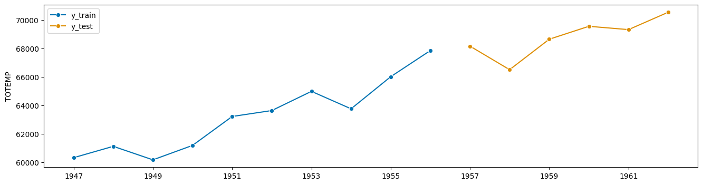
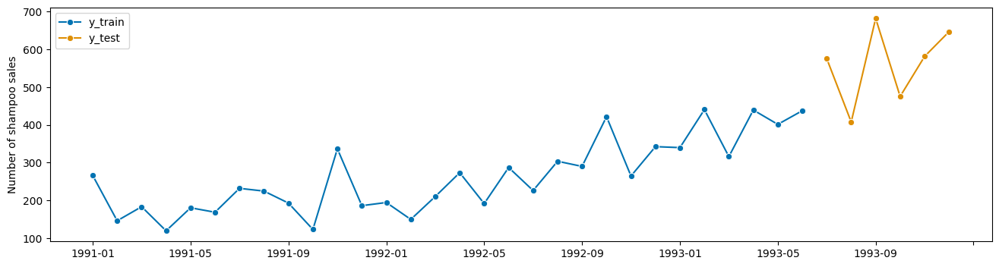
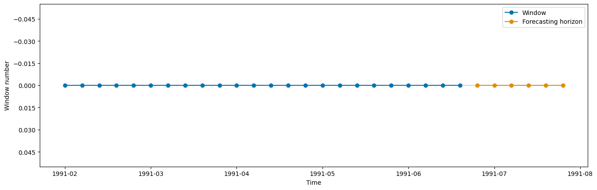
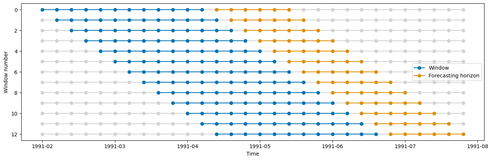
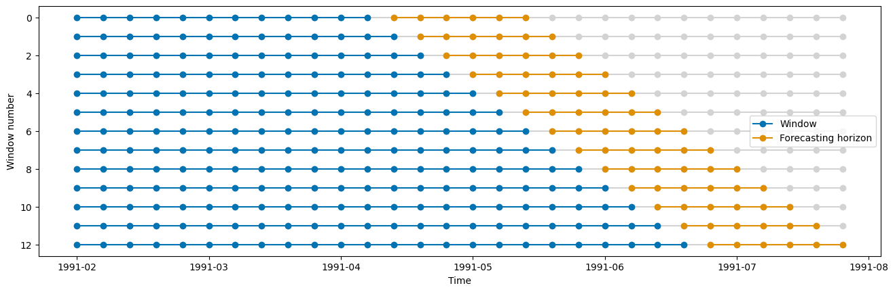
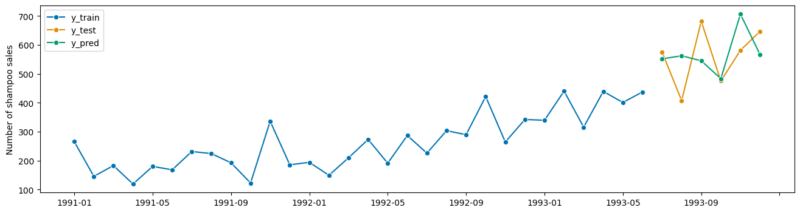
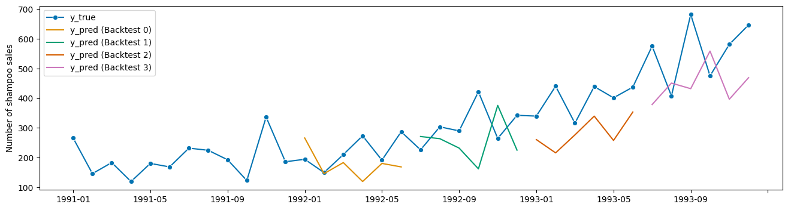
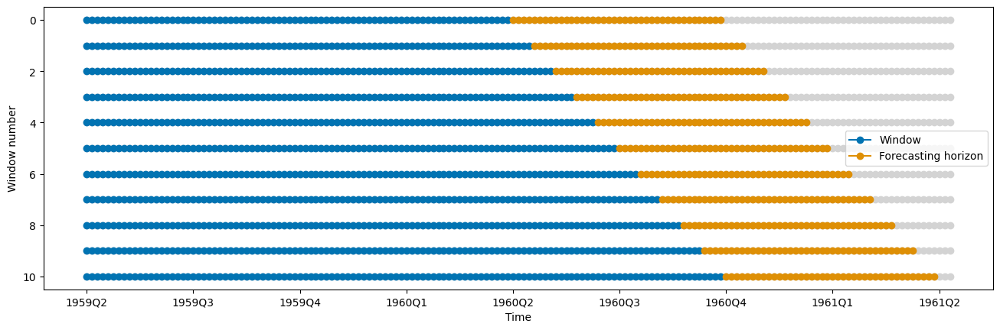

4 Forecasting Pipelines, Tuning, and AutoML#
This notebook is about pipelining and tuning (grid search) for time series forecasting with sktime
[1]:
import warnings
import numpy as np
warnings.filterwarnings("ignore")
4.1 Using exogeneous data X in forecasting#
The exogenous data X is a pd.DataFrame with the same index as y. It can be given optionally to a forecaster in the fit and predict methods. If X is given in fit, it also has to be given in predict, this means the future values of X have to be available at the time of prediction.
[ ]:
from sktime.datasets import load_longley
from sktime.forecasting.base import ForecastingHorizon
from sktime.split import temporal_train_test_split
from sktime.utils.plotting import plot_series
y, X = load_longley()
y_train, y_test, X_train, X_test = temporal_train_test_split(y=y, X=X, test_size=6)
fh = ForecastingHorizon(y_test.index, is_relative=False)
[3]:
plot_series(y_train, y_test, labels=["y_train", "y_test"]);

[4]:
X.head()
[4]:
| GNPDEFL | GNP | UNEMP | ARMED | POP | |
|---|---|---|---|---|---|
| Period | |||||
| 1947 | 83.0 | 234289.0 | 2356.0 | 1590.0 | 107608.0 |
| 1948 | 88.5 | 259426.0 | 2325.0 | 1456.0 | 108632.0 |
| 1949 | 88.2 | 258054.0 | 3682.0 | 1616.0 | 109773.0 |
| 1950 | 89.5 | 284599.0 | 3351.0 | 1650.0 | 110929.0 |
| 1951 | 96.2 | 328975.0 | 2099.0 | 3099.0 | 112075.0 |
[5]:
from sktime.forecasting.arima import AutoARIMA
forecaster = AutoARIMA(suppress_warnings=True)
forecaster.fit(y=y_train, X=X_train)
y_pred = forecaster.predict(fh=fh, X=X_test)
In case we dont have future X values to call predict(...), we can forecast X separately by means of the ForecastX composition class. This class takes two separate forecasters, one to forecast y and another one to forecast X. This means that when we call predict(...) first the X is forecasted and then given to the y forecaster to forecast y.
[6]:
from sktime.forecasting.compose import ForecastX
from sktime.forecasting.var import VAR
forecaster_X = ForecastX(
forecaster_y=AutoARIMA(sp=1, suppress_warnings=True),
forecaster_X=VAR(),
)
forecaster_X.fit(y=y, X=X, fh=fh)
# now in predict() we don't need to pass X
y_pred = forecaster_X.predict(fh=fh)
4.2 Simple Forecasting Pipelines#
We hae seen: pipelines combine multiple estimators into one.
Forecasters methods have two key data arguments, both time series:
endogeneous data,
yexogeneous data
X
Pipelines exist for both
Pipeline transformers on endogenous data - y argument#
Sequence of transforms without pipeline object:
[7]:
from sktime.forecasting.arima import AutoARIMA
from sktime.transformations.series.detrend import Deseasonalizer, Detrender
detrender = Detrender()
deseasonalizer = Deseasonalizer()
forecaster = AutoARIMA(sp=1, suppress_warnings=True)
# fit_transform
y_train_1 = detrender.fit_transform(y_train)
y_train_2 = deseasonalizer.fit_transform(y_train_1)
# fit
forecaster.fit(y_train_2)
# predidct
y_pred_2 = forecaster.predict(fh)
# inverse_transform
y_pred_1 = detrender.inverse_transform(y_pred_2)
y_pred_isolated = deseasonalizer.inverse_transform(y_pred_1)
As one end-to-end forecaster, using TransformedTargetForecaster class:
[8]:
from sktime.forecasting.compose import TransformedTargetForecaster
pipe_y = TransformedTargetForecaster(
steps=[
("detrend", Detrender()),
("deseasonalize", Deseasonalizer()),
("forecaster", AutoARIMA(sp=1, suppress_warnings=True)),
]
)
pipe_y.fit(y=y_train)
y_pred_pipe = pipe_y.predict(fh=fh)
from pandas.testing import assert_series_equal
# make sure that outputs are the same
assert_series_equal(y_pred_pipe, y_pred_isolated)
Pipeline transformers on exogenous data - X argument#
Applies transformers to X argument before passed to forecaster.
Here: Detrender then Deseasonalizer, then passed to AutoARIMA’s X
[9]:
from sktime.forecasting.compose import ForecastingPipeline
pipe_X = ForecastingPipeline(
steps=[
("detrend", Detrender()),
("deseasonalize", Deseasonalizer()),
("forecaster", AutoARIMA(sp=1, suppress_warnings=True)),
]
)
pipe_X.fit(y=y_train, X=X_train)
y_pred = pipe_X.predict(fh=fh, X=X_test)
Pipeline on y and X data by means of nesting#
[10]:
pipe_y = TransformedTargetForecaster(
steps=[
("detrend", Detrender()),
("deseasonalize", Deseasonalizer()),
("forecaster", AutoARIMA(sp=1, suppress_warnings=True)),
]
)
pipe_X = ForecastingPipeline(
steps=[
("detrend", Detrender()),
("deseasonalize", Deseasonalizer()),
("forecaster", pipe_y),
]
)
pipe_X.fit(y=y_train, X=X_train)
y_pred = pipe_X.predict(fh=fh, X=X_test)
sktime provides a dunder methods for estimators to chain them into pipelines and other compositions. To create pipelines we can use * for creation of a TransformedTargetForecaster and ** for creation of a ForecastingPipeline. Further dunder methods are given in the appendinx section at the end of this notebook.
[11]:
pipe_y = Detrender() * Deseasonalizer() * AutoARIMA()
pipe_y
[11]:
TransformedTargetForecaster(steps=[Detrender(), Deseasonalizer(), AutoARIMA()])In a Jupyter environment, please rerun this cell to show the HTML representation or trust the notebook.
On GitHub, the HTML representation is unable to render, please try loading this page with nbviewer.org.
TransformedTargetForecaster(steps=[Detrender(), Deseasonalizer(), AutoARIMA()])
[12]:
pipe_X = Detrender() ** Deseasonalizer() ** AutoARIMA()
pipe_X
[12]:
ForecastingPipeline(steps=[Detrender(), Deseasonalizer(), AutoARIMA()])In a Jupyter environment, please rerun this cell to show the HTML representation or trust the notebook.
On GitHub, the HTML representation is unable to render, please try loading this page with nbviewer.org.
ForecastingPipeline(steps=[Detrender(), Deseasonalizer(), AutoARIMA()])
nesting with dunders, both X and y:
[13]:
pipe_nested = (
Detrender() * Deseasonalizer() * (Detrender() ** Deseasonalizer() ** AutoARIMA())
)
4.3 Tuning#
Temporal cross-validation#
In sktime there are three different types of temporal cross-validation splitters available: - SingleWindowSplitter, which is equivalent to a single train-test-split - SlidingWindowSplitter, which is using a rolling window approach and “forgets” the oldest observations as we move more into the future - ExpandingWindowSplitter, which is using a expanding window approach and keep all observations in the training set as we move more into the future
[14]:
from sktime.datasets import load_shampoo_sales
y = load_shampoo_sales()
y_train, y_test = temporal_train_test_split(y=y, test_size=6)
plot_series(y_train, y_test, labels=["y_train", "y_test"]);

[15]:
from sktime.forecasting.base import ForecastingHorizon
from sktime.split import (
ExpandingWindowSplitter,
SingleWindowSplitter,
SlidingWindowSplitter,
)
from sktime.utils.plotting import plot_windows
fh = ForecastingHorizon(y_test.index, is_relative=False).to_relative(
cutoff=y_train.index[-1]
)
[16]:
cv = SingleWindowSplitter(fh=fh, window_length=len(y_train) - 6)
plot_windows(cv=cv, y=y_train)

[17]:
cv = SlidingWindowSplitter(fh=fh, window_length=12, step_length=1)
plot_windows(cv=cv, y=y_train)

[18]:
cv = ExpandingWindowSplitter(fh=fh, initial_window=12, step_length=1)
plot_windows(cv=cv, y=y_train)

[19]:
# get number of total splits (folds)
cv.get_n_splits(y=y_train)
[19]:
13
Grid search#
Performing a grid search can be done in sktime equivalent to sklearn by using a cross-validation to search for the best parameter combination.
[20]:
from sktime.forecasting.exp_smoothing import ExponentialSmoothing
from sktime.forecasting.model_selection import ForecastingGridSearchCV
from sktime.performance_metrics.forecasting import MeanSquaredError
forecaster = ExponentialSmoothing()
param_grid = {
"sp": [4, 6, 12],
"seasonal": ["add", "mul"],
"trend": ["add", "mul"],
"damped_trend": [True, False],
}
gscv = ForecastingGridSearchCV(
forecaster=forecaster,
param_grid=param_grid,
cv=cv,
verbose=1,
scoring=MeanSquaredError(square_root=True),
)
gscv.fit(y_train)
y_pred = gscv.predict(fh=fh)
Fitting 13 folds for each of 24 candidates, totalling 312 fits
[21]:
plot_series(y_train, y_test, y_pred, labels=["y_train", "y_test", "y_pred"]);

[22]:
gscv.best_params_
[22]:
{'damped_trend': True, 'seasonal': 'add', 'sp': 12, 'trend': 'mul'}
[23]:
gscv.best_forecaster_
[23]:
ExponentialSmoothing(damped_trend=True, seasonal='add', sp=12, trend='mul')In a Jupyter environment, please rerun this cell to show the HTML representation or trust the notebook.
On GitHub, the HTML representation is unable to render, please try loading this page with nbviewer.org.
ExponentialSmoothing(damped_trend=True, seasonal='add', sp=12, trend='mul')
[24]:
gscv.cv_results_.head()
[24]:
| mean_test_MeanSquaredError | mean_fit_time | mean_pred_time | params | rank_test_MeanSquaredError | |
|---|---|---|---|---|---|
| 0 | 98.635359 | 0.126247 | 0.004085 | {'damped_trend': True, 'seasonal': 'add', 'sp'... | 7.0 |
| 1 | 98.327241 | 0.137226 | 0.004455 | {'damped_trend': True, 'seasonal': 'add', 'sp'... | 6.0 |
| 2 | 104.567201 | 0.127894 | 0.004397 | {'damped_trend': True, 'seasonal': 'add', 'sp'... | 13.0 |
| 3 | 112.555601 | 0.137103 | 0.004005 | {'damped_trend': True, 'seasonal': 'add', 'sp'... | 16.0 |
| 4 | 147.065358 | 0.107994 | 0.003920 | {'damped_trend': True, 'seasonal': 'add', 'sp'... | 22.0 |
Grid search with pipeline#
For tuning parameters with compositions such as pipelines, we can use the <estimator>__<parameter> syntax known from scikit-learn. For multiple levels of nesting, we can use the same syntax with two underscores, e.g. forecaster__transformer__parameter.
[25]:
from sklearn.preprocessing import MinMaxScaler, PowerTransformer, RobustScaler
from sktime.forecasting.compose import TransformedTargetForecaster
from sktime.transformations.series.adapt import TabularToSeriesAdaptor
from sktime.transformations.series.detrend import Deseasonalizer, Detrender
forecaster = TransformedTargetForecaster(
steps=[
("detrender", Detrender()),
("deseasonalizer", Deseasonalizer()),
("minmax", TabularToSeriesAdaptor(MinMaxScaler((1, 10)))),
("power", TabularToSeriesAdaptor(PowerTransformer())),
("scaler", TabularToSeriesAdaptor(RobustScaler())),
("forecaster", ExponentialSmoothing()),
]
)
# using dunder notation to access inner objects/params as in sklearn
param_grid = {
# deseasonalizer
"deseasonalizer__model": ["multiplicative", "additive"],
# power
"power__transformer__method": ["yeo-johnson", "box-cox"],
"power__transformer__standardize": [True, False],
# forecaster
"forecaster__sp": [4, 6, 12],
"forecaster__seasonal": ["add", "mul"],
"forecaster__trend": ["add", "mul"],
"forecaster__damped_trend": [True, False],
}
gscv = ForecastingGridSearchCV(
forecaster=forecaster,
param_grid=param_grid,
cv=cv,
verbose=1,
scoring=MeanSquaredError(square_root=True), # set custom scoring function
)
gscv.fit(y_train)
y_pred = gscv.predict(fh=fh)
Fitting 13 folds for each of 192 candidates, totalling 2496 fits
[26]:
gscv.best_params_
[26]:
{'deseasonalizer__model': 'additive',
'forecaster__damped_trend': False,
'forecaster__seasonal': 'add',
'forecaster__sp': 4,
'forecaster__trend': 'add',
'power__transformer__method': 'yeo-johnson',
'power__transformer__standardize': False}
Model selection#
There are three ways ways to select a model out of multiple models: 1) ForecastingGridSearchCV 2) MultiplexForecaster 3) relative_loss or RelativeLoss
1) ForecastingGridSearchCV#
We can use ForecastingGridSearchCV to fit multiple forecasters and find the best one using equivalent notations as in sklearn. We can either do: param_grid: List[Dict] or we just have a list of forecasters in the grid: forecaster": [NaiveForecaster(), STLForecaster()]. The advanteage doing this together tuning the other parameters is that we can use the same cross-validation as for the other parameters to find the overall best forecasters and parameters.
[27]:
from sktime.forecasting.naive import NaiveForecaster
from sktime.forecasting.theta import ThetaForecaster
from sktime.forecasting.trend import STLForecaster
forecaster = TransformedTargetForecaster(
steps=[
("detrender", Detrender()),
("deseasonalizer", Deseasonalizer()),
("scaler", TabularToSeriesAdaptor(RobustScaler())),
("minmax2", TabularToSeriesAdaptor(MinMaxScaler((1, 10)))),
("forecaster", NaiveForecaster()),
]
)
gscv = ForecastingGridSearchCV(
forecaster=forecaster,
param_grid=[
{
"scaler__transformer__with_scaling": [True, False],
"forecaster": [NaiveForecaster()],
"forecaster__strategy": ["drift", "last", "mean"],
"forecaster__sp": [4, 6, 12],
},
{
"scaler__transformer__with_scaling": [True, False],
"forecaster": [STLForecaster(), ThetaForecaster()],
"forecaster__sp": [4, 6, 12],
},
],
cv=cv,
)
gscv.fit(y)
gscv.best_params_
[27]:
{'forecaster': NaiveForecaster(sp=4),
'forecaster__sp': 4,
'forecaster__strategy': 'last',
'scaler__transformer__with_scaling': True}
2) MultiplexForecaster#
We can use the MultiplexForecaster to compare the performance of different forecasters. This approach might be useful if we want to compare the performance of different forecasters that have been tuned and fitted already separately. The MultiplexForecaster is just a forecaster compostition that provides a parameters selected_forecaster: List[str] that can be tuned with a grid search. The other parameters of the forecasters are not tuned.
[28]:
from sktime.forecasting.compose import MultiplexForecaster
forecaster = MultiplexForecaster(
forecasters=[
("naive", NaiveForecaster()),
("stl", STLForecaster()),
("theta", ThetaForecaster()),
]
)
gscv = ForecastingGridSearchCV(
forecaster=forecaster,
param_grid={"selected_forecaster": ["naive", "stl", "theta"]},
cv=cv,
)
gscv.fit(y)
gscv.best_params_
[28]:
{'selected_forecaster': 'theta'}
3) relative_loss or RelativeLoss#
We can compare two models on a given test data by means of a relative loss calculation. This is however not doing any cross-validation compared to the above model selection approaches 1) and 2).
The relative loss function applies a forecasting performance metric to a set of forecasts and benchmark forecasts and reports the ratio of the metric from the forecasts to the the metric from the benchmark forecasts. Relative loss output is non-negative floating point. The best value is 0.0. The relative loss function uses the mean_absolute_error by default as error metric. If the score is >1, the forecast given as y_pred is worse than the given benchmark forecast in
y_pred_benchmark. If we want to customize the relative loss, we can use the RelativeLoss scorer class and e.g. provide a custom loss function.
[29]:
from sktime.performance_metrics.forecasting import mean_squared_error, relative_loss
relative_loss(y_true=y_test, y_pred=y_pred_1, y_pred_benchmark=y_pred_2)
[29]:
123.00771294252276
[30]:
from sktime.performance_metrics.forecasting import RelativeLoss
relative_mse = RelativeLoss(relative_loss_function=mean_squared_error)
relative_mse(y_true=y_test, y_pred=y_pred_1, y_pred_benchmark=y_pred_2)
[30]:
14720.015012346896
Tuning pipeline structure as a hyper-parameter#
Pipeline structure choices influence performance
sktime allows to expose these choices via structural compositors:
switch between transform/forecast:
MultiplexTransformer,MultiplexForecastertransformer on/off:
OptionalPassthroughsequence of transformers:
Permute
Combine with pipelines and FeatureUnion for rich structure space
Combination of transformers#
Given a set of four different transformers, we would like to know which combination of the four transformers is having the best error. So in total there are 4² = 16 different combinations. We can use the GridSearchCV to find the best combination.
[31]:
steps = [
("detrender", Detrender()),
("deseasonalizer", Deseasonalizer()),
("power", TabularToSeriesAdaptor(PowerTransformer())),
("scaler", TabularToSeriesAdaptor(RobustScaler())),
("forecaster", ExponentialSmoothing()),
]
In sktime there is a transformer composition called OptionalPassthrough() which gets a transformer as an argument and a param passthrough: bool. Setting passthrough=True will return an identity transformation for the given data. Setting passthrough=False will apply the given inner transformer on the data.
[32]:
from sktime.transformations.compose import OptionalPassthrough
transformer = OptionalPassthrough(transformer=Detrender(), passthrough=True)
transformer.fit_transform(y_train).head()
[32]:
1991-01 266.0
1991-02 145.9
1991-03 183.1
1991-04 119.3
1991-05 180.3
Freq: M, Name: Number of shampoo sales, dtype: float64
[33]:
y_train.head()
[33]:
1991-01 266.0
1991-02 145.9
1991-03 183.1
1991-04 119.3
1991-05 180.3
Freq: M, Name: Number of shampoo sales, dtype: float64
[34]:
transformer = OptionalPassthrough(transformer=Detrender(), passthrough=False)
transformer.fit_transform(y_train).head()
[34]:
1991-01 130.376344
1991-02 1.503263
1991-03 29.930182
1991-04 -42.642900
1991-05 9.584019
Freq: M, dtype: float64
[35]:
forecaster = TransformedTargetForecaster(
steps=[
("detrender", OptionalPassthrough(Detrender())),
("deseasonalizer", OptionalPassthrough(Deseasonalizer())),
("power", OptionalPassthrough(TabularToSeriesAdaptor(PowerTransformer()))),
("scaler", OptionalPassthrough(TabularToSeriesAdaptor(RobustScaler()))),
("forecaster", ExponentialSmoothing()),
]
)
param_grid = {
"detrender__passthrough": [True, False],
"deseasonalizer__passthrough": [True, False],
"power__passthrough": [True, False],
"scaler__passthrough": [True, False],
}
gscv = ForecastingGridSearchCV(
forecaster=forecaster,
param_grid=param_grid,
cv=cv,
verbose=1,
scoring=MeanSquaredError(square_root=True),
)
gscv.fit(y_train)
Fitting 13 folds for each of 16 candidates, totalling 208 fits
[35]:
ForecastingGridSearchCV(cv=ExpandingWindowSplitter(fh=ForecastingHorizon([1, 2, 3, 4, 5, 6], dtype='int64', is_relative=True),
initial_window=12),
forecaster=TransformedTargetForecaster(steps=[('detrender',
OptionalPassthrough(transformer=Detrender())),
('deseasonalizer',
OptionalPassthrough(transformer=Deseasonalizer())),
('power',
OptionalPassthrough(transform...
OptionalPassthrough(transformer=TabularToSeriesAdaptor(transformer=RobustScaler()))),
('forecaster',
ExponentialSmoothing())]),
n_jobs=-1,
param_grid={'deseasonalizer__passthrough': [True,
False],
'detrender__passthrough': [True, False],
'power__passthrough': [True, False],
'scaler__passthrough': [True, False]},
scoring=MeanSquaredError(square_root=True), verbose=1)In a Jupyter environment, please rerun this cell to show the HTML representation or trust the notebook. On GitHub, the HTML representation is unable to render, please try loading this page with nbviewer.org.
ForecastingGridSearchCV(cv=ExpandingWindowSplitter(fh=ForecastingHorizon([1, 2, 3, 4, 5, 6], dtype='int64', is_relative=True),
initial_window=12),
forecaster=TransformedTargetForecaster(steps=[('detrender',
OptionalPassthrough(transformer=Detrender())),
('deseasonalizer',
OptionalPassthrough(transformer=Deseasonalizer())),
('power',
OptionalPassthrough(transform...
OptionalPassthrough(transformer=TabularToSeriesAdaptor(transformer=RobustScaler()))),
('forecaster',
ExponentialSmoothing())]),
n_jobs=-1,
param_grid={'deseasonalizer__passthrough': [True,
False],
'detrender__passthrough': [True, False],
'power__passthrough': [True, False],
'scaler__passthrough': [True, False]},
scoring=MeanSquaredError(square_root=True), verbose=1)TransformedTargetForecaster(steps=[('detrender',
OptionalPassthrough(transformer=Detrender())),
('deseasonalizer',
OptionalPassthrough(transformer=Deseasonalizer())),
('power',
OptionalPassthrough(transformer=TabularToSeriesAdaptor(transformer=PowerTransformer()))),
('scaler',
OptionalPassthrough(transformer=TabularToSeriesAdaptor(transformer=RobustScaler()))),
('forecaster', ExponentialSmoothing())])TransformedTargetForecaster(steps=[('detrender',
OptionalPassthrough(transformer=Detrender())),
('deseasonalizer',
OptionalPassthrough(transformer=Deseasonalizer())),
('power',
OptionalPassthrough(transformer=TabularToSeriesAdaptor(transformer=PowerTransformer()))),
('scaler',
OptionalPassthrough(transformer=TabularToSeriesAdaptor(transformer=RobustScaler()))),
('forecaster', ExponentialSmoothing())])Best performing combination of transformers:
[36]:
gscv.best_params_
[36]:
{'deseasonalizer__passthrough': True,
'detrender__passthrough': False,
'power__passthrough': True,
'scaler__passthrough': True}
Worst performing combination of transformers:
[37]:
# worst params
gscv.cv_results_.sort_values(by="mean_test_MeanSquaredError", ascending=True).iloc[-1][
"params"
]
[37]:
{'deseasonalizer__passthrough': False,
'detrender__passthrough': True,
'power__passthrough': False,
'scaler__passthrough': True}
Permutation of transformers#
Given a set of four different transformers, we would like to know which permutation (ordering) of the four transformers is having the best error. In total there are 4! = 24 different permutations. We can use the GridSearchCV to find the best permutation.
[38]:
from sktime.forecasting.compose import Permute
[39]:
forecaster = TransformedTargetForecaster(
steps=[
("detrender", Detrender()),
("deseasonalizer", Deseasonalizer()),
("power", TabularToSeriesAdaptor(PowerTransformer())),
("scaler", TabularToSeriesAdaptor(RobustScaler())),
("forecaster", ExponentialSmoothing()),
]
)
param_grid = {
"permutation": [
["detrender", "deseasonalizer", "power", "scaler", "forecaster"],
["power", "scaler", "detrender", "deseasonalizer", "forecaster"],
["scaler", "deseasonalizer", "power", "detrender", "forecaster"],
["deseasonalizer", "power", "scaler", "detrender", "forecaster"],
]
}
permuted = Permute(estimator=forecaster, permutation=None)
gscv = ForecastingGridSearchCV(
forecaster=permuted,
param_grid=param_grid,
cv=cv,
verbose=1,
scoring=MeanSquaredError(square_root=True),
)
permuted = gscv.fit(y, fh=fh)
Fitting 19 folds for each of 4 candidates, totalling 76 fits
[40]:
permuted.cv_results_
[40]:
| mean_test_MeanSquaredError | mean_fit_time | mean_pred_time | params | rank_test_MeanSquaredError | |
|---|---|---|---|---|---|
| 0 | 104.529303 | 0.119823 | 0.032105 | {'permutation': ['detrender', 'deseasonalizer'... | 4.0 |
| 1 | 95.172818 | 0.118840 | 0.033758 | {'permutation': ['power', 'scaler', 'detrender... | 1.5 |
| 2 | 95.243942 | 0.114363 | 0.033743 | {'permutation': ['scaler', 'deseasonalizer', '... | 3.0 |
| 3 | 95.172818 | 0.119377 | 0.030739 | {'permutation': ['deseasonalizer', 'power', 's... | 1.5 |
[41]:
gscv.best_params_
[41]:
{'permutation': ['power',
'scaler',
'detrender',
'deseasonalizer',
'forecaster']}
[42]:
# worst params
gscv.cv_results_.sort_values(by="mean_test_MeanSquaredError", ascending=True).iloc[-1][
"params"
]
[42]:
{'permutation': ['detrender',
'deseasonalizer',
'power',
'scaler',
'forecaster']}
4.4 Putting it all together: AutoML-like pipeline and tuning#
Taking all incredients from above examples, we can build a forecaster that comes close to what is usually called AutoML. With AutoML we aim to automate as many steps of an ML model creation as possible. The main compositions from sktime that we can use for this are: - TransformedTargetForecaster - ForecastingPipeline - ForecastingGridSearchCV - OptionalPassthrough - Permute
Univariate example#
Please see appendix section for an example with exogenous data
[43]:
pipe_y = TransformedTargetForecaster(
steps=[
("detrender", OptionalPassthrough(Detrender())),
("deseasonalizer", OptionalPassthrough(Deseasonalizer())),
("scaler", OptionalPassthrough(TabularToSeriesAdaptor(RobustScaler()))),
("forecaster", STLForecaster()),
]
)
permuted_y = Permute(estimator=pipe_y, permutation=None)
param_grid = {
"permutation": [
["detrender", "deseasonalizer", "scaler", "forecaster"],
["scaler", "deseasonalizer", "detrender", "forecaster"],
],
"estimator__detrender__passthrough": [True, False],
"estimator__deseasonalizer__passthrough": [True, False],
"estimator__scaler__passthrough": [True, False],
"estimator__scaler__transformer__transformer__with_scaling": [True, False],
"estimator__scaler__transformer__transformer__with_centering": [True, False],
"estimator__forecaster__sp": [4, 8, 12],
}
gscv = ForecastingGridSearchCV(
forecaster=permuted_y,
param_grid=param_grid,
cv=cv,
verbose=1,
scoring=MeanSquaredError(square_root=True),
error_score="raise",
)
gscv.fit(y=y_train, fh=fh)
Fitting 13 folds for each of 192 candidates, totalling 2496 fits
[43]:
ForecastingGridSearchCV(cv=ExpandingWindowSplitter(fh=ForecastingHorizon([1, 2, 3, 4, 5, 6], dtype='int64', is_relative=True),
initial_window=12),
error_score='raise',
forecaster=Permute(estimator=TransformedTargetForecaster(steps=[('detrender',
OptionalPassthrough(transformer=Detrender())),
('deseasonalizer',
OptionalPassthrough(transformer=Deseasonalizer())),...
'estimator__scaler__passthrough': [True,
False],
'estimator__scaler__transformer__transformer__with_centering': [True,
False],
'estimator__scaler__transformer__transformer__with_scaling': [True,
False],
'permutation': [['detrender',
'deseasonalizer', 'scaler',
'forecaster'],
['scaler', 'deseasonalizer',
'detrender',
'forecaster']]},
scoring=MeanSquaredError(square_root=True), verbose=1)In a Jupyter environment, please rerun this cell to show the HTML representation or trust the notebook. On GitHub, the HTML representation is unable to render, please try loading this page with nbviewer.org.
ForecastingGridSearchCV(cv=ExpandingWindowSplitter(fh=ForecastingHorizon([1, 2, 3, 4, 5, 6], dtype='int64', is_relative=True),
initial_window=12),
error_score='raise',
forecaster=Permute(estimator=TransformedTargetForecaster(steps=[('detrender',
OptionalPassthrough(transformer=Detrender())),
('deseasonalizer',
OptionalPassthrough(transformer=Deseasonalizer())),...
'estimator__scaler__passthrough': [True,
False],
'estimator__scaler__transformer__transformer__with_centering': [True,
False],
'estimator__scaler__transformer__transformer__with_scaling': [True,
False],
'permutation': [['detrender',
'deseasonalizer', 'scaler',
'forecaster'],
['scaler', 'deseasonalizer',
'detrender',
'forecaster']]},
scoring=MeanSquaredError(square_root=True), verbose=1)Permute(estimator=TransformedTargetForecaster(steps=[('detrender',
OptionalPassthrough(transformer=Detrender())),
('deseasonalizer',
OptionalPassthrough(transformer=Deseasonalizer())),
('scaler',
OptionalPassthrough(transformer=TabularToSeriesAdaptor(transformer=RobustScaler()))),
('forecaster',
STLForecaster())]))TransformedTargetForecaster(steps=[('detrender',
OptionalPassthrough(transformer=Detrender())),
('deseasonalizer',
OptionalPassthrough(transformer=Deseasonalizer())),
('scaler',
OptionalPassthrough(transformer=TabularToSeriesAdaptor(transformer=RobustScaler()))),
('forecaster', STLForecaster())])TransformedTargetForecaster(steps=[('detrender',
OptionalPassthrough(transformer=Detrender())),
('deseasonalizer',
OptionalPassthrough(transformer=Deseasonalizer())),
('scaler',
OptionalPassthrough(transformer=TabularToSeriesAdaptor(transformer=RobustScaler()))),
('forecaster', STLForecaster())])[44]:
gscv.cv_results_["mean_test_MeanSquaredError"].min()
[44]:
83.44136911735615
[45]:
gscv.cv_results_["mean_test_MeanSquaredError"].max()
[45]:
125.54124792614672
4.5 Model backtesting#
After fitting a model, we can evaluate the model error in the past similar to a cross-validation. For this we can use the evaluate function. This approach is often also called backtesting as we want to test the forecasters performance in the past.
[46]:
from sktime.forecasting.model_evaluation import evaluate
y = load_shampoo_sales()
results = evaluate(
forecaster=STLForecaster(sp=12),
y=y,
cv=ExpandingWindowSplitter(fh=[1, 2, 3, 4, 5, 6], initial_window=12, step_length=6),
scoring=MeanSquaredError(square_root=True),
return_data=True,
)
results
[46]:
| test_MeanSquaredError | fit_time | pred_time | len_train_window | cutoff | y_train | y_test | y_pred | |
|---|---|---|---|---|---|---|---|---|
| 0 | 85.405220 | 0.008634 | 0.009597 | 12 | 1991-12 | Period 1991-01 266.0 1991-02 145.9 1991-... | Period 1992-01 194.3 1992-02 149.5 1992-... | 1992-01 266.0 1992-02 145.9 1992-03 1... |
| 1 | 129.383456 | 0.010045 | 0.007728 | 18 | 1992-06 | Period 1991-01 266.0 1991-02 145.9 1991-... | Period 1992-07 226.0 1992-08 303.6 1992-... | 1992-07 270.953646 1992-08 263.653646 19... |
| 2 | 126.393156 | 0.009373 | 0.008245 | 24 | 1992-12 | Period 1991-01 266.0 1991-02 145.9 1991-... | Period 1993-01 339.7 1993-02 440.4 1993-... | 1993-01 260.633333 1993-02 215.833333 19... |
| 3 | 171.142305 | 0.012287 | 0.009526 | 30 | 1993-06 | Period 1991-01 266.0 1991-02 145.9 1991-... | Period 1993-07 575.5 1993-08 407.6 1993-... | 1993-07 378.659609 1993-08 450.927848 19... |
[47]:
plot_series(
y,
results["y_pred"].iloc[0],
results["y_pred"].iloc[1],
results["y_pred"].iloc[2],
results["y_pred"].iloc[3],
markers=["o", "", "", "", ""],
labels=["y_true"] + ["y_pred (Backtest " + str(x) + ")" for x in range(4)],
);

4.6 Appendix#
AutoML-like pipeline with exog data#
[48]:
from sktime.datasets import load_macroeconomic
data = load_macroeconomic()
y = data["unemp"]
X = data.drop(columns=["unemp"])
y_train, y_test, X_train, X_test = temporal_train_test_split(y, X, test_size=40)
fh = ForecastingHorizon(np.arange(1, 41), is_relative=True)
[49]:
cv = ExpandingWindowSplitter(fh=fh, initial_window=80, step_length=4)
plot_windows(cv=cv, y=y_train)

[50]:
from sktime.datasets import load_macroeconomic
from sktime.forecasting.statsforecast import StatsForecastAutoARIMA
from sktime.split import temporal_train_test_split
data = load_macroeconomic()
y = data["unemp"]
X = data.drop(columns=["unemp"])
y_train, y_test, X_train, X_test = temporal_train_test_split(y, X, test_size=40)
fh = ForecastingHorizon(np.arange(1, 41), is_relative=True)
pipe_y = TransformedTargetForecaster(
steps=[
("detrender", OptionalPassthrough(Detrender())),
("deseasonalizer", OptionalPassthrough(Deseasonalizer())),
("scaler", OptionalPassthrough(TabularToSeriesAdaptor(RobustScaler()))),
("forecaster", StatsForecastAutoARIMA(sp=4)),
]
)
permuted_y = Permute(pipe_y, permutation=None)
pipe_X = TransformedTargetForecaster(
steps=[
("detrender", OptionalPassthrough(Detrender())),
("deseasonalizer", OptionalPassthrough(Deseasonalizer())),
("scaler", OptionalPassthrough(TabularToSeriesAdaptor(RobustScaler()))),
("forecaster", permuted_y),
]
)
permuted_X = Permute(pipe_X, permutation=None)
[51]:
gscv = ForecastingGridSearchCV(
forecaster=permuted_X,
param_grid={
"estimator__forecaster__permutation": [
["detrender", "deseasonalizer", "scaler", "forecaster"],
["scaler", "detrender", "deseasonalizer", "forecaster"],
],
"permutation": [
["detrender", "deseasonalizer", "scaler", "forecaster"],
["scaler", "detrender", "deseasonalizer", "forecaster"],
],
"estimator__forecaster__estimator__scaler__passthrough": [True, False],
"estimator__scaler__passthrough": [True, False],
},
cv=cv,
error_score="raise",
scoring=MeanSquaredError(square_root=True),
)
gscv.fit(y=y_train, X=X_train)
[51]:
ForecastingGridSearchCV(cv=ExpandingWindowSplitter(fh=ForecastingHorizon([ 1, 2, 3, 4, 5, 6, 7, 8, 9, 10, 11, 12, 13, 14, 15, 16, 17,
18, 19, 20, 21, 22, 23, 24, 25, 26, 27, 28, 29, 30, 31, 32, 33, 34,
35, 36, 37, 38, 39, 40],
dtype='int64', is_relative=True),
initial_window=80,
step_length=4),
error_score='raise',
forecaster=Permute(estimator=TransformedTargetForecaster(steps=[('detrender',
Op...
'estimator__forecaster__permutation': [['detrender',
'deseasonalizer',
'scaler',
'forecaster'],
['scaler',
'detrender',
'deseasonalizer',
'forecaster']],
'estimator__scaler__passthrough': [True,
False],
'permutation': [['detrender',
'deseasonalizer', 'scaler',
'forecaster'],
['scaler', 'detrender',
'deseasonalizer',
'forecaster']]},
scoring=MeanSquaredError(square_root=True))In a Jupyter environment, please rerun this cell to show the HTML representation or trust the notebook. On GitHub, the HTML representation is unable to render, please try loading this page with nbviewer.org.
ForecastingGridSearchCV(cv=ExpandingWindowSplitter(fh=ForecastingHorizon([ 1, 2, 3, 4, 5, 6, 7, 8, 9, 10, 11, 12, 13, 14, 15, 16, 17,
18, 19, 20, 21, 22, 23, 24, 25, 26, 27, 28, 29, 30, 31, 32, 33, 34,
35, 36, 37, 38, 39, 40],
dtype='int64', is_relative=True),
initial_window=80,
step_length=4),
error_score='raise',
forecaster=Permute(estimator=TransformedTargetForecaster(steps=[('detrender',
Op...
'estimator__forecaster__permutation': [['detrender',
'deseasonalizer',
'scaler',
'forecaster'],
['scaler',
'detrender',
'deseasonalizer',
'forecaster']],
'estimator__scaler__passthrough': [True,
False],
'permutation': [['detrender',
'deseasonalizer', 'scaler',
'forecaster'],
['scaler', 'detrender',
'deseasonalizer',
'forecaster']]},
scoring=MeanSquaredError(square_root=True))Permute(estimator=TransformedTargetForecaster(steps=[('detrender',
OptionalPassthrough(transformer=Detrender())),
('deseasonalizer',
OptionalPassthrough(transformer=Deseasonalizer())),
('scaler',
OptionalPassthrough(transformer=TabularToSeriesAdaptor(transformer=RobustScaler()))),
('forecaster',
Permute(estimator=TransformedTargetForecaster(steps=[('detrender',
OptionalPassthrough(transformer=Detrender())),
('deseasonalizer',
OptionalPassthrough(transformer=Deseasonalizer())),
('scaler',
OptionalPassthrough(transformer=TabularToSeriesAdaptor(transformer=RobustScaler()))),
('forecaster',
StatsForecastAutoARIMA(sp=4))])))]))TransformedTargetForecaster(steps=[('detrender',
OptionalPassthrough(transformer=Detrender())),
('deseasonalizer',
OptionalPassthrough(transformer=Deseasonalizer())),
('scaler',
OptionalPassthrough(transformer=TabularToSeriesAdaptor(transformer=RobustScaler()))),
('forecaster',
Permute(estimator=TransformedTargetForecaster(steps=[('detrender',
OptionalPassthrough(transformer=Detrender())),
('deseasonalizer',
OptionalPassthrough(transformer=Deseasonalizer())),
('scaler',
OptionalPassthrough(transformer=TabularToSeriesAdaptor(transformer=RobustScaler()))),
('forecaster',
StatsForecastAutoARIMA(sp=4))])))])TransformedTargetForecaster(steps=[('detrender',
OptionalPassthrough(transformer=Detrender())),
('deseasonalizer',
OptionalPassthrough(transformer=Deseasonalizer())),
('scaler',
OptionalPassthrough(transformer=TabularToSeriesAdaptor(transformer=RobustScaler()))),
('forecaster',
Permute(estimator=TransformedTargetForecaster(steps=[('detrender',
OptionalPassthrough(transformer=Detrender())),
('deseasonalizer',
OptionalPassthrough(transformer=Deseasonalizer())),
('scaler',
OptionalPassthrough(transformer=TabularToSeriesAdaptor(transformer=RobustScaler()))),
('forecaster',
StatsForecastAutoARIMA(sp=4))])))])[52]:
gscv.cv_results_["mean_test_MeanSquaredError"].min()
[52]:
1.9856591203311482
[53]:
gscv.cv_results_["mean_test_MeanSquaredError"].max()
[53]:
2.1207628182179863
[54]:
gscv.best_params_
[54]:
{'estimator__forecaster__estimator__scaler__passthrough': True,
'estimator__forecaster__permutation': ['detrender',
'deseasonalizer',
'scaler',
'forecaster'],
'estimator__scaler__passthrough': False,
'permutation': ['detrender', 'deseasonalizer', 'scaler', 'forecaster']}
[55]:
# worst params
gscv.cv_results_.sort_values(by="mean_test_MeanSquaredError", ascending=True).iloc[-1][
"params"
]
[55]:
{'estimator__forecaster__estimator__scaler__passthrough': True,
'estimator__forecaster__permutation': ['scaler',
'detrender',
'deseasonalizer',
'forecaster'],
'estimator__scaler__passthrough': True,
'permutation': ['scaler', 'detrender', 'deseasonalizer', 'forecaster']}
Credits: notebook 4 - pipelines#
notebook creation: aiwalter
Generated using nbsphinx. The Jupyter notebook can be found here.